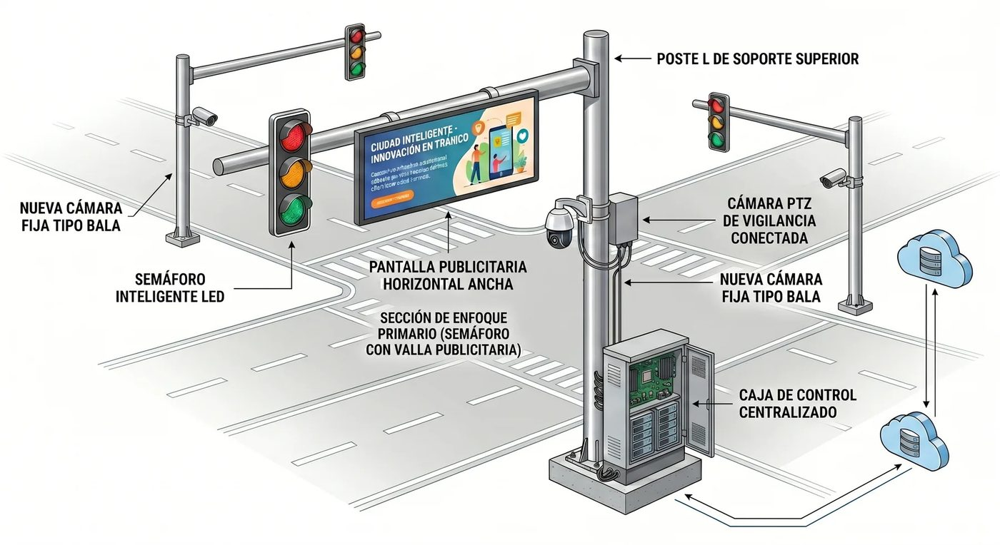

Proyecto Panoptes
Propuesta para el Municipio Piloto, Portuguesa
Electro Shop Morandin C.A.
0257-251.12.82
correo@electroshopve.com
0257-251.12.82
correo@electroshopve.com
Una ciudad protegida,
incluso sin electricidad
Postes inteligentes con semáforo, cámaras y batería que avisan de emergencias a una central de mando, sin depender de internet.

80 %
menos electricidad en los semáforos
5 horas
funcionando durante un apagón
1 minuto
o menos para avisar de una emergencia
$0
de mantenimiento para el Estado con la concesión publicitaria
El problema
- trafficSolo 68 de cada 100 semáforos funcionan. Muchas esquinas no tienen ningún control.
- power_offApagones de hasta 6 horas. Semáforos y cámaras se apagan justo cuando más se necesitan.
- videocam_offCámaras que no se conectan. Nadie ve una emergencia a tiempo.
Avisa a tiempo cuando alguien necesita ayuda
personal_injuryPersona desmayada
car_crashChoque de tránsito
local_fire_departmentHumo o incendio
battery_alertRobo o daño al poste
graphic_eqGritos y disparos
groupsMultitudes en riesgo
La inteligencia artificial trabaja dentro del poste, sin internet. Un operador confirma cada alerta antes de enviar ayuda.
luam-lu.github.io/Panoptes1 de 2